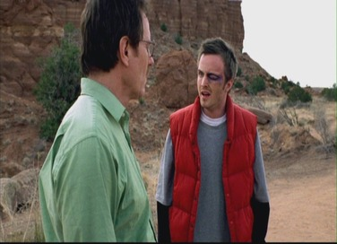
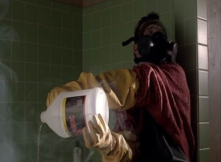
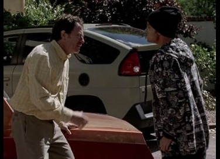
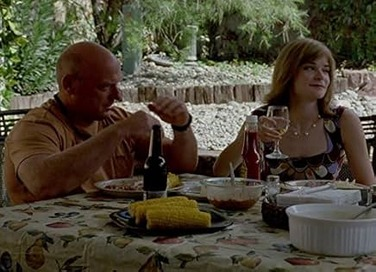
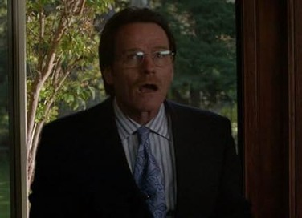
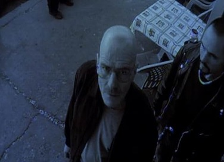
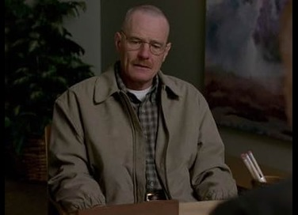

Breaking Bad Episodes
Season 1
1. Pilot
Diagnosed with terminal lung cancer, chemistry teacher Walter White teams up with former student Jesse Pinkman to cook and sell crystal meth.
2. Cat's in the Bag...
After their first drug deal goes terribly wrong, Walt and Jesse are forced to deal with a corpse and a prisoner. Meanwhile, Skyler grows suspicious of Walt's activities.
3. ...And the Bag's in the River
Walt and Jesse clean up after the bathtub incident before Walt decides what course of action to take with their prisoner Krazy-8.
4. Cancer Man
Walt tells the rest of his family about his cancer. Jesse tries to make amends with his own parents.
5. Gray Matter
Walt rejects everyone who tries to help him with the cancer. Jesse tries his best to create Walt's meth, with the help of an old friend.
6. Crazy Handful of Nothin'
With the side effects and cost of his treatment mounting, Walt demands that Jesse finds a wholesaler to buy their drugs - which lands him in trouble.
7. A No-Rough-Stuff-Type Deal
Walt and Jesse try to up their game by making more of the crystal every week for Tuco. Unfortunately, some of the ingredients they need are not easy to find. Meanwhile, Skyler realizes that her sister is a shoplifter.